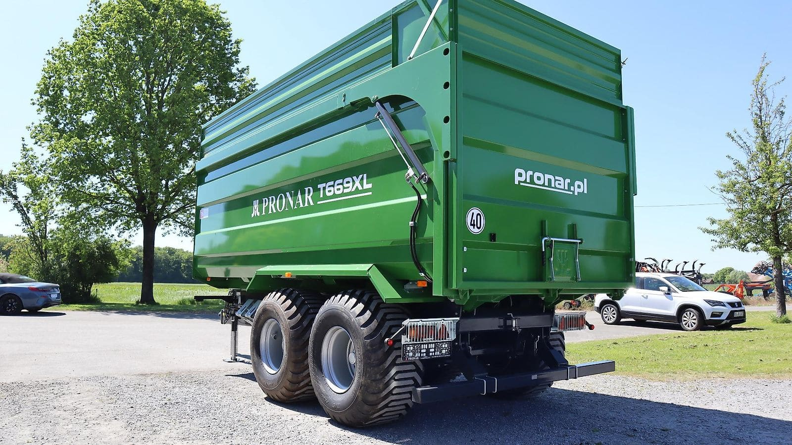

Weiteres Programm
Weiteres Programm
Neben der Bodenbearbeitung führt das techniCCenter Kreiseleggen, Muldenkipper, Schlepperreifen und Verschleißteile. Fragen Sie nach Ihrem Bedarf, vieles ist ab Lager lieferbar.
Ausstattung
- Kreiseleggen
- Quivogne MEKFOLD, klappbar, 6,0 m, mit Zahnpackerwalze
- Muldenkipper
- Pronar Wannen- und Halfpipe-Muldenkipper, 19 bis 30 m³ Ladevolumen
- Schlepperreifen
- Michelin, Alliance und Ascenso, zum Teil als Sonderposten
- Verschleißteile
- Hohlscheiben und Meißelspitzen, passend für agroXX, Mandam, Bremer, Saphir und Meyer


Baugrößen und Ausführungen
Kreiseleggen
Quivogne MEKFOLD, klappbar, 6,0 m.
| Modell | Ausführung | Eckdaten |
|---|---|---|
| Quivogne MEKFOLD 240-600 Hydro Plus | hydraulische Tiefen- und Planierschienenverstellung | Arbeitsbreite 6,0 m · 550-mm-Zahnpackerwalze · Walterscheid-Gelenkwelle mit Nockenschaltkupplung |
| Quivogne MEKFOLD 260-600 | mit Zahnpackerwalze | Arbeitsbreite 6,0 m · 500-mm-Zahnpackerwalze · Walterscheid-Gelenkwelle mit Nockenschaltkupplung |
Muldenkipper
Pronar Wannen- und Halfpipe-Muldenkipper.
| Modell | Ausführung | Eckdaten |
|---|---|---|
| Pronar T669XL Wannen-Muldenkipper | mit Aufsätzen und Bereifung 600/55-22.5 | Ladevolumen 30,3 m³ · Nutzlast 15 t · Druckluftbremse · bis 40 km/h · automatische Rückwand, hydraulische Bordwandverriegelung |
| Pronar T679M Halfpipe-Muldenkipper | mit Aufsätzen und Bereifung 500/60R22.5 | Ladevolumen 19,45 m³ · Nutzlast 11,7 t · Druckluftbremse · bis 40 km/h · automatische Rückwand, hydraulische Bordwandverriegelung |
Federzinkeneggen
Speedline Großfederzinkenegge.
| Modell | Ausführung | Eckdaten |
|---|---|---|
| Speedline 6.0 XC Großfederzinkenegge | mit Herkuleszinken 70 × 12 mm | Arbeitsbreite 6,0 m · Arbeitstiefe bis 12 cm · Rohrstabwalze, klappbar, Steinsicherung |
Angaben ohne Gewähr. Aktuelle Verfügbarkeit und Preise erfragen Sie bitte direkt bei uns.
Beratung direkt vom Händler
Rufen Sie an, schreiben Sie per WhatsApp oder E-Mail. Wir sprechen mit Ihnen über Maschine, Ausstattung und Lieferung.